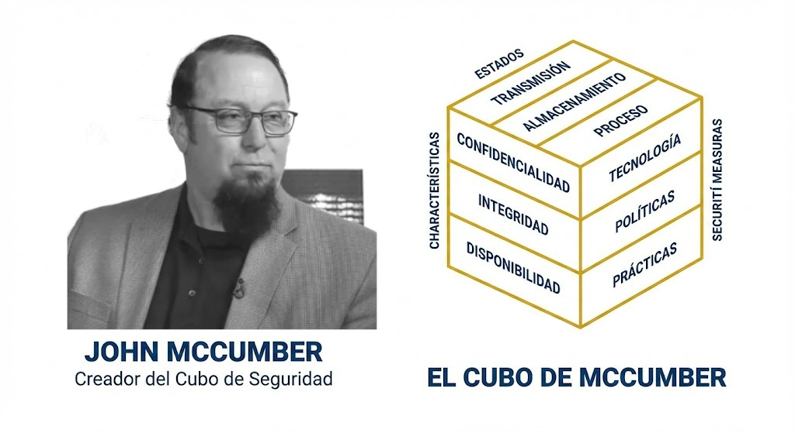
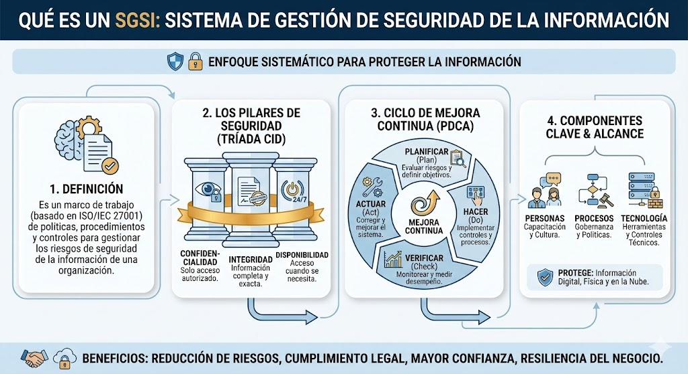
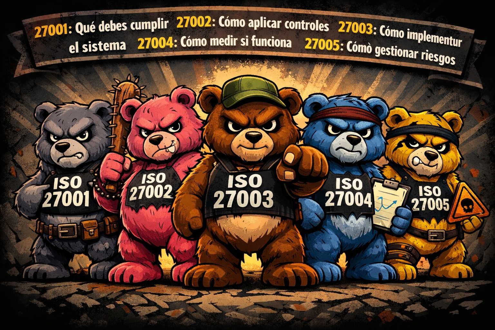
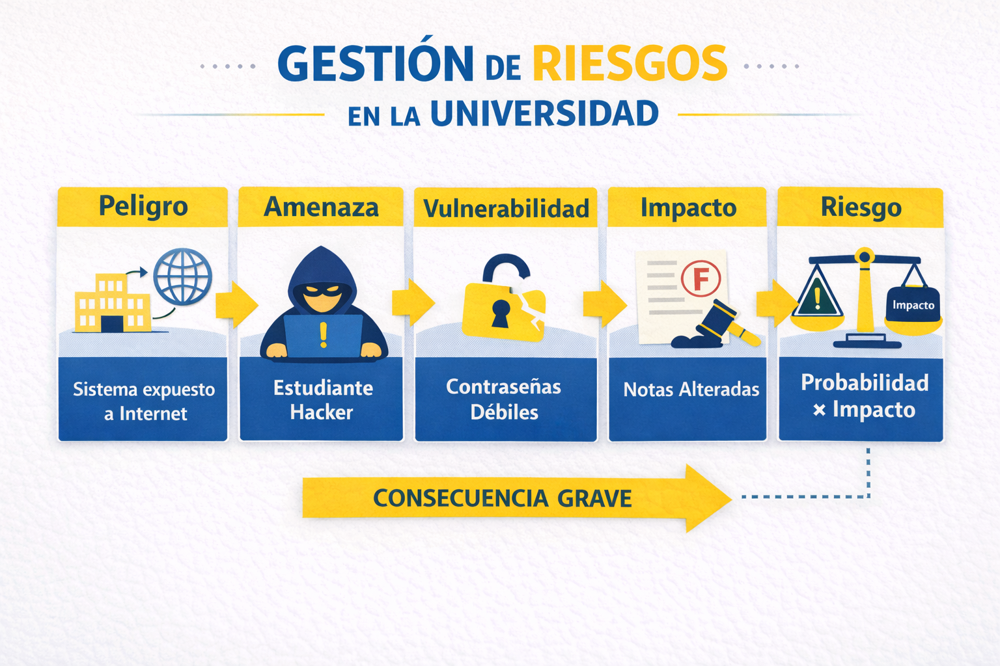

Introducción a la
Seguridad, Seguridad Informática, Seguridad de la Información-InfoSec, Ciberseguridad
Juan Alberto Fajardo Canaza
1. Fundamentos de Seguridad
Seguridad física
Seguridad informática
Seguridad de la información InfoSec
Ciberseguridad.
Seguridad informática
Seguridad de la información InfoSec
Ciberseguridad.
1.1 Seguridad
Condición de estar protegido frente a riesgos, amenazas o peligros.
Componentes: Protección · Prevención · Control · Gestión de riesgos · Continuidad
Aplica a personas, bienes, procesos, información y tecnología.
1.2 Seguridad Informática
Protección de sistemas informáticos (hardware, software, redes).
1.3 Seguridad de la Información
Protege la información(activo) en cualquier formato (digital, físico, verbal) garantizando CIA.
1.4 Ciberseguridad
Protege sistemas conectados a redes (ataques digitales).
2. Principios Fundamentales
Tríada CIA y Cubo de John McCumber.
2.1 Tríada CIA
🔐 Confidencialidad
Solo acceden autorizados
Solo acceden autorizados
📦 Integridad
No alteración sin permiso
No alteración sin permiso
⏱️ Disponibilidad
Accesible cuando se necesita
Accesible cuando se necesita
2.2 Cubo de John McCumber

4. Panorama de Amenazas
https://cloud.google.com/security/resources/m-trends
https://www.verizon.com/business/resources/reports/dbir/
https://www.verizon.com/business/resources/reports/dbir/
4.1 Tipos de amenazas
4.2 Malware
4.4 Phising
4.4 Ataques comunes
5. Marco Normativo
Bolivia y estándares internacionales.
🇧🇴 Normativa Nacional (Bolivia)
CGII · Centro de Gestión de Incidentes
Contraloria · Normas TIC
ASFI · REGLAMENTO PARA LA GESTIÓN DE SEGURIDAD DE LA
INFORMACIÓN
🌐 Normativa Internacional
- ISO/IEC 27000 familia:
- 27001 (requisitos SGSI)
- 27002 (controles)
- 27003 (implementación)
- 27004 (métricas)
- 27005 (gestión riesgos)


6. Seguridad Defensiva · Blue Team
Proteger, detectar, responder.
Blue Team
Implementación de controles
Monitoreo continuo
Gestión de vulnerabilidades
Hardening
Respuesta a incidentes
SOC – Centro de Operaciones de Seguridad
Monitorea 24/7, analiza alertas, gestiona incidentes, coordina respuesta.
Herramientas: SIEM, EDR, IDS/IPS.
7. Respuesta a Incidentes y Forense
NIST Incident Response 800-61 Revision 3
Fases de respuesta
Análisis forense digital: qué ocurrió, cómo, responsable, impacto.
8. Seguridad Ofensiva · Red Team
Simular ataques reales para identificar vulnerabilidades.
Disciplinas:
Ethical Hacking Pentesting
Análisis de vulnerabilidades
Ingeniería social controlada
Red Team vs Blue Team
Metodologías y marcos
Etapas del pentesting
9. Gestión de Riesgos
Peligro, amenaza, vulnerabilidad, impacto, riesgo.
Riesgo = Probabilidad * Impacto
Probabilidad = Amenaza * Vulnerabilidad
Impacto = C + I + A
Peligro: fuente potencial de daño
Amenaza: evento que explota vulnerabilidad
Vulnerabilidad: debilidad explotable
Impacto: consecuencia negativa
Riesgo: probabilidad de materialización
Amenaza: evento que explota vulnerabilidad
Vulnerabilidad: debilidad explotable
Impacto: consecuencia negativa
Riesgo: probabilidad de materialización
